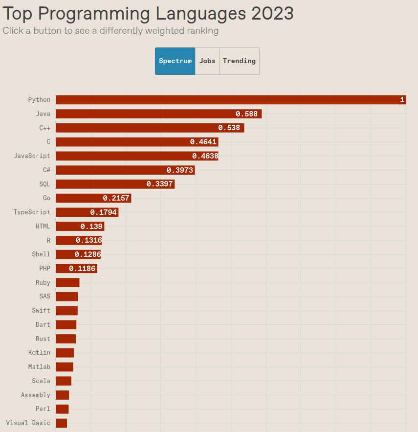
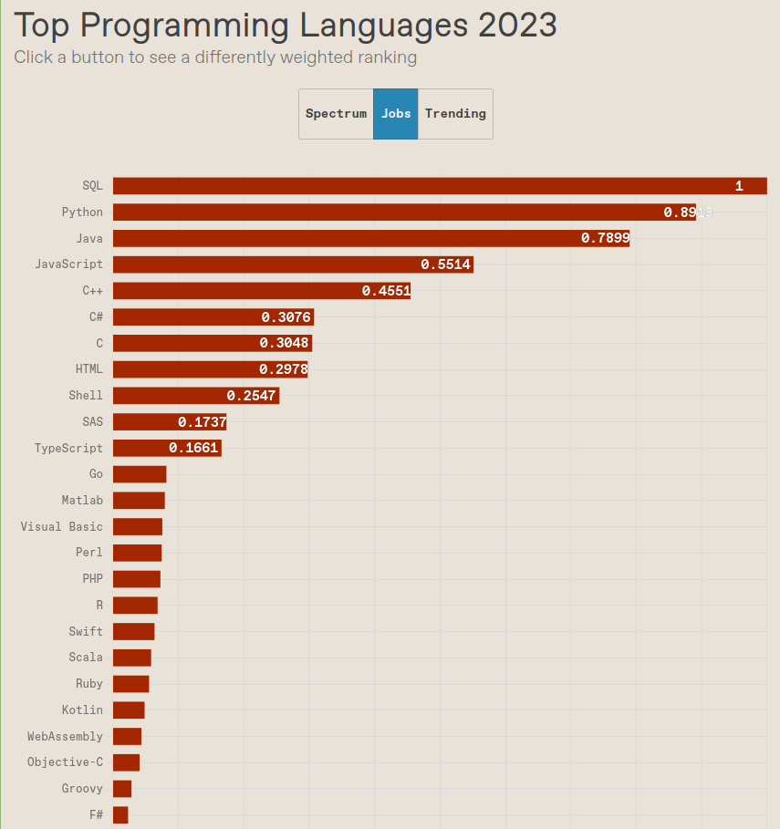
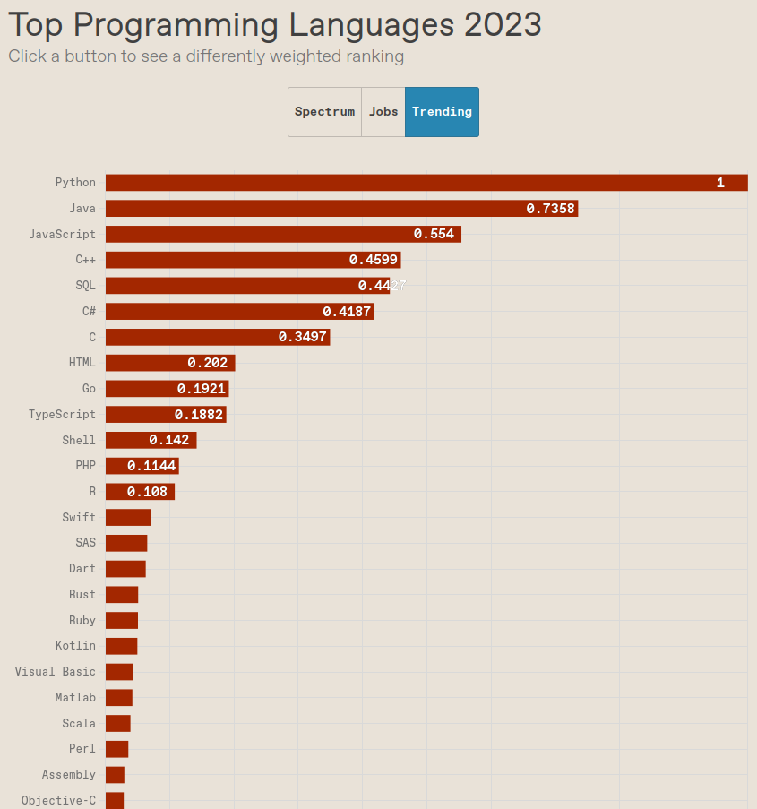

Популярные Языки Программирования 2023Журнал Института инженеров электротехники и электроники IEEE Spectrum опубликовал свой рейтинг популярности языков программирования 2023 года. Методология анализа и обработки данных для этого исследования основывается на изучении влияния 59 языков программирования на сообщество инженеров и разработчиков в разных случаях их востребованности и на основе активного интереса разработчиков к каждому из этих языков программирования. Для сбора информации о разных языках программирования в IEEE Spectrum использовали ручной поиск и сбор данных об упоминании языков в облачных сервисах Google, Stack Overflow, GitHub (GitHut 2), IEEE Xplore Digital Library, Discord, Trinity College Dublin Library, сайтах IEEE Job и CareerBuilder. Рейтинг IEEE Spectrum разделён на три части (аспекта популярности) по ранжированию направлений данных по активно используемым языкам программирования: языки, активно используемые среди типичных членов сообщества IEEE и активных инженеров-программистов (вкладка «Спектр»), языки, востребованные работодателями (вкладка «Работа») и языки, находящиеся в духе времени (вкладка «Тенденции»). В категории «Спектр» первая пятёрка языков — Python, Java, C++, C, JavaScript. Далее идут C#, SQL и Go. Доминирование Python этой в категории, по-видимому, происходит в основном за счёт более мелких и специализированных языков. Python стал языком-«мастером на все руки» и основным для некоторых IT-направлений, например искусственного интеллекта, где мощные и обширные библиотеки делают этот язык повсеместным в употреблении. В рейтинге «Работа» язык SQL занимает первое место, потом идёт Python и Java. Однако, как ни странно, разработчик вряд ли получит работу в качестве программиста чистого SQL. Вместо этого работодатели любят, видеть навыки SQL в тандеме с каким-либо другим языком, таким как Java или C++. В современных распределённых архитектурах множество критически важных для бизнеса данных хранится в базах данных SQL, будь то список магических заклинаний, которые игрок знает в онлайн-игре, или сумма денег на его реальном банковском счёте. Если вы хотите что-то сделать с этой информацией, вам нужно знать, как к ней добраться. Создатели рейтинга пояснили. что в конечном счёте в IEEE Spectrum попытались измерить то, что никогда не может быть измерено точно, но основываясь на фактах постоянного использования, чтобы не увязнуть в дебатах о том, как формально классифицируются языки программирования. Авторы рейтинга уточнили, что решили обосновать популярность языков распрограммирования именно практическими соображениями, связанными с разработчиками, создающими программистское волшебство, которое заставляет современный мир жить всё время в ускоренном темпе. В рейтинге «Тенденции» тройка по популярности языков состоит из Python, Java и JavaScript.  |
|---|